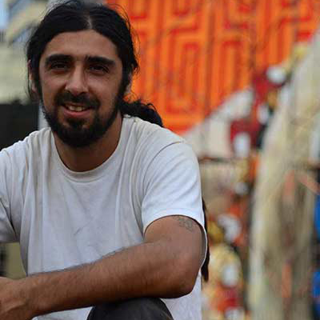
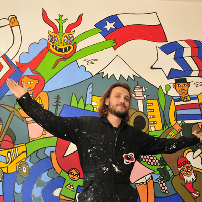

Testimonios
Citas de las Entrevistas realizadas

Inti Castro
Artista y Muralista Chileno Las personas están empezando a entenderlo de otra forma, se están dando cuenta de que esta especie de invasión del espacio público no es con malas intenciones.
Las personas están empezando a entenderlo de otra forma, se están dando cuenta de que esta especie de invasión del espacio público no es con malas intenciones.  Me parece que existe un gran talento a nivel nacional, en especial con el arte emergente. Se necesitan más espacios para poder hacer cosas.
Me parece que existe un gran talento a nivel nacional, en especial con el arte emergente. Se necesitan más espacios para poder hacer cosas.
